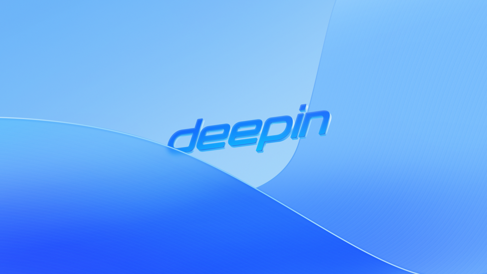

deepin 25
A fresh start with a brand-new design
Explore now
System stability is rock solid

Comprehensive upgrade of core components, offering broader hardware compatibility, improved feature support, enhanced security, and overall greater system stability.

Core system files are mounted as read-only and cannot be modified, making the system more secure and stable.

Enhanced snapshot mechanism with minimal storage usage; in case of update or boot failure, the system automatically rolls back to the last known good snapshot.

Brand new desktop, simple and efficient
The newly designed control center, taskbar, and notification center utilize interface space more efficiently, enhancing usability. The skeuomorphic design makes icons more intuitive and easier to understand. With the QML reconstruction, the desktop consumes fewer system resources and significantly improves operation and response speed, delivering a smoother user experience.
Play again 
Self-developed window manager is faster and smoother
TUsing a brand-new Wayland window compositor solution, it offers a smoother and more efficient experience compared to version 23.
Where the heart goes,the shadow follows
The user experience and human-computer interaction provide a more enjoyable sensation. On laptop and tablet hardware, it achieves a seamless integration of human and machine, with the system interface responding "like a shadow follows the body."
Three fingers
Four fingers
Press and hold to drag the window，Swipe up or down to adjust the window size.
linyaps
Solving compatibility challenges across formats and dependencies to deliver a more stable, reliable system and application experience.
Effectively addresses the complexity of building multi-application packages across different distributions, helping software vendors and individual developers significantly reduce development and maintenance costs.
Multi-Architecture Support
Linyaps offers full support for X86, ARM, and LoongArch64 architectures
Distribution Support
Supports multiple mainstream distributions including Ubuntu, Debian, Fedora, and openEuler.
Ecosystem Support
With support for multiple architectures, over 6,000 applications have been made available, covering a wide range of scenarios from daily productivity to entertainment
Comprehensive Toolchain System
Provides conversion tools for major application package formats including DEB, AppImage, and Flatpak.
Offers a web-based build tool via Ruyi Linglong, supporting visualized packaging operations.

Supports automated packaging in both online and offline environments through Ruyi Linglong tools.
Provides automated testing tools for Ruyi Linglong applications to ensure build quality and system compatibility.
Establishes a dedicated developer forum to support technical exchange and community interaction.
Empowerment through intelligence, AI as you think
Voice Conversation: You can have voice conversations with AI, and it will answer any questions you want to know.
Text Communication: AI can understand your commands and respond, quickly answer questions, complete translations in different languages, intelligent drawing, and other AI behaviors, enhancing your work efficiency.
Quick feeding, accurate answers
AI Bar supports word selection and file drag-and-drop parsing.
Play again 
Enjoy yourself without boundaries
Cross-terminal collaboration
Free sharing breaks device boundaries, low latency synchronization of mobile devices,Realize mobile phone and PC interaction
View the tested models
Cross-platform collaboration, Android device support
Mobile phone brand
Mobile phone model
Redmi
K40
K40s
Note 11 Pro
k70
k70E
oppo
Reno7
HONOR
90
x40
OnePlus
T8
vivo
X200
T2X
Xiaomi
12
14
15PRO
HUAWEI
P30
Mate40 Pro
*Testing has been conducted on the above models, and we welcome more Android phone users to provide feedback on their experience
Play again 
Distrobox subsystem, more powerful and free
Supports Ubuntu, Debian, Arch Linux, and Fedora systems. One-click installation from the store, and quick launch of the subsystem can be done with a single click from the launcher taskbar
Download experience now
*The screen is for reference only, and the specific experience is subject to the actual application.